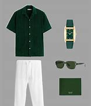
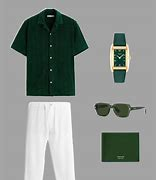
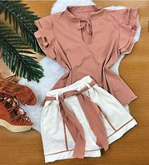
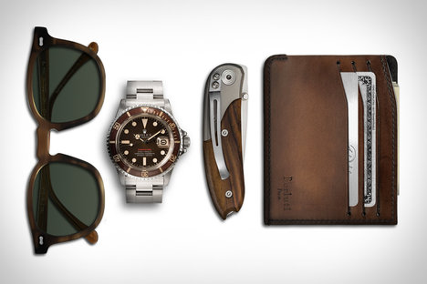

Moda Masculina
Confira os melhores estilos para homens com qualidade e sofisticação.
Confira os melhores estilos para homens com qualidade e sofisticação.
Descubra as coleções femininas mais elegantes e modernas.
Complete seu look com acessórios exclusivos da Zun’s FM.
